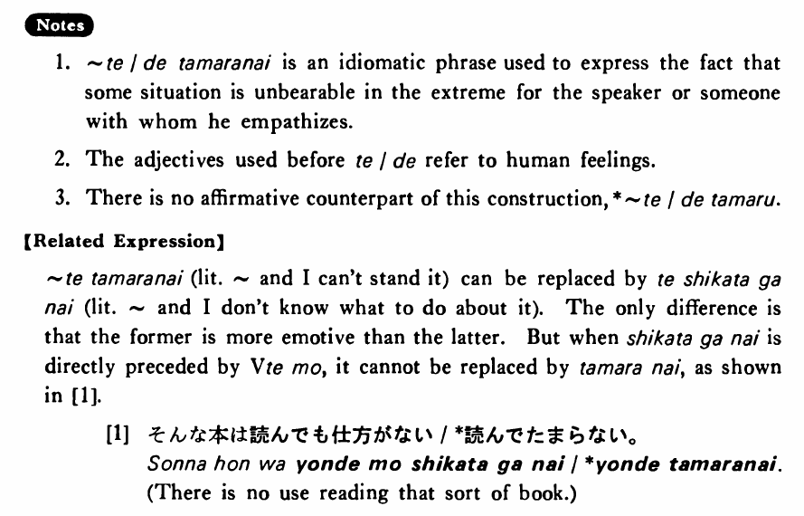

←
DoJG
→
堪らない・たまらない
(B. 445)
Example sentences
(ksa).
今日は暑くて
堪らない
・
堪りません
。
It is unbearably hot today.
(ksb).
数学が嫌いで
堪らない
・
堪りません
。
I really hate math.
(a).
この本は面白くて
堪りません
。
This book is extremely interesting.
(b).
父が死んで、悲しくて
堪りません
。
My father died and I'm awfully sad.
(c).
美味しい魚が食べたくて
堪りません
。
I'm dying to eat some good fish.
(d).
僕はあの子が好きで
堪らない
。
I just love that girl.
(e).
兄は田中先生の授業が嫌で
堪らなかった
。
My older brother really hated Mr. Tanaka's class.
Formation
Adjective い stem
くて堪らない
寒
くて堪らない
Something is unbearable cold
Adjective な stem
で堪らない
不便
で堪らない
Something is unbearable inconvenient
